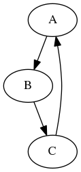

pOTTR: The Basics of Reasonable Ontology Templates
Table of Contents
The Basics of Reasonable Ontology Templates
Learn the basics of OTTR
- Authors
- Leif Harald Karlsen, Martin G. Skjæveland
- Issues
- https://gitlab.com/ottr/language/pOTTR/issues
1 Introduction
This primer is a lightweight introduction to the basics concepts of OTTR templates. The fundamentals of OTTR are formally defined in mOTTR [1]. The syntax used in this document is stOTTR [3].
1.1 Prefixes
The following prefixes are used throughout the document, and may be used in the text input areas of the interactive examples without declaration.
@prefix rdf: <http://www.w3.org/1999/02/22-rdf-syntax-ns#> . @prefix rdfs: <http://www.w3.org/2000/01/rdf-schema#> . @prefix owl: <http://www.w3.org/2002/07/owl#> . @prefix xsd: <http://www.w3.org/2001/XMLSchema#> . @prefix foaf: <http://xmlns.com/foaf/0.1/> . @prefix dbp: <http://dbpedia.org/ontology/> . @prefix ex: <http://example.com/ns#> . @prefix ottr: <http://ns.ottr.xyz/0.4/> . @prefix ax: <http://tpl.ottr.xyz/owl/axiom/0.1/> . @prefix rstr: <http://tpl.ottr.xyz/owl/restriction/0.1/> .
2 Templates and Instances
The core concepts in OTTR are templates and instances of templates.
Here are two instances of the template ex:Person, which is listed
below. The first instance specifies the 3 arguments: ~"Ann"~, ~"Strong"~ and
<mailto:ann.strong@gmail.com>:
ex:Person("Ann", "Strong", <mailto:ann.strong@gmail.com>) .
ex:Person("Bob", "Brite", <mailto:bob.brite@gmail.com>) .
A template consists of a signature and a pattern. The signature of template specifies its identifier and its parameters. The pattern contains (other) instances and may use the template's parameters as arguments.
This is the ex:Person template. It specifies 3 parameters,
?firstName, ?lastName and ?email, and contains 3 instances of
the ottr:Triple template in its pattern. The arguments of an
instance must match the parameters of its template.
ex:Person[ ?firstName, ?lastName, ?email ] :: {
ottr:Triple (_:person, rdf:type, foaf:Person ),
ottr:Triple (_:person, foaf:firstName, ?firstName ),
ottr:Triple (_:person, foaf:lastName, ?lastName ),
ottr:Triple (_:person, foaf:mbox, ?email )
} .
An instance represents a replica of the template pattern where the template's parameters have been replaced by the arguments of the instance. An instance can be expanded by recursively replacing instances with the pattern they represent.
This is the expansion of the example ex:Person instance when we
expand to stOTTR [3] syntax:
nil
This is the expansion of the instance when we expand to wOTTR [4] syntax, the RDF serialisation format of OTTR:
nil
The expansion is done by our reference implementation Lutra. Lutra has
special support for instances of the template ottr:Triple and treats
them as regular RDF triples.
2.1 Exercise: Getting familiar with the interactive exercise form
This primer contains interactive exercises where you can test and run your solution directly. Usually each exercise contains one input box for template instances, and one box for templates. When clicking the "Run" button at the bottom, the instances in the instance box are expanded using the templates in the template box, or using templates fetched by their IRI or the templates found in the standard library at http://tpl.ottr.xyz/, if these options set to true.
One can also change the what should happen when one clicks "Run" by changing "Action" on the same line as "Run", and change the output format to, e.g., stOTTR.
In this exercise we will get familiar with this setup, so do the following:
- Click the "Run" button to expand the instances
- Add a few more instances of the
ex:Persontemplate in the instance-box and click "Run" to expand them - Do some changes in the pattern of the
ex:Persontemplate, e.g., changefoaf:lastNametofoaf:surname, click "Run" and see the effects of the expansion. - Change the output format to stOTTR and click "Run"
2.2 Exercise: Create a new template
Create a template ex:Organization such that the instance below
expands to the following RDF graph:
Note that # can be used to add comments.
nil
Solution
ex:Organization[ ?name, ?age, ?url] :: {
ottr:Triple(_:org, rdf:type, foaf:Organization),
ottr:Triple(_:org, foaf:name, ?name),
ottr:Triple(_:org, foaf:age, ?age),
ottr:Triple(_:org, foaf:homepage, ?url)
} .
2.3 Base templates
A base template is a template with no pattern.
This is an example of a base template:
ex:MyTriple{?s, ?p, ?o} :: BASE .
The process of expanding instances terminates until all instances
are instances of base templates. Any further processing of base
template instances must be handled by the implementation. In the
current specification and implementation, ottr:Triple is the only
such base template; and instances of ottr:Triple represent
(regular) RDF triples.
It is possible to specify your own base templates, however we do not yet support specifying how such instances are handled, so an instance of a user defined template will simply be "left as is".
2.4 Exercise: Create a base template
Exercise: Declare the ex:Organization template as a base
template, expand and see the results.
Solution
ex:Organisation[?name, ?age, ?homepage] :: BASE .
3 Nesting templates
The pattern of a template can contain any template instances, not
just instances of ottr:Triple as we have seen in the examples so
far. However, cyclic template definitions are not allowed and will
result in an error.
The ability to compose templates from existing templates is a powerful feature of OTTR templates which allows templates to hide the complexity of modelling patterns at different levels of abstraction.
3.1 Exercise: Refactoring
Below is the definition of the template ex:Type. (This templates'
parameters are typed—ignore this for now, we will learn what
types are in the next section.)
Change the templates in the previous exercises to use this template
instead of the ottr:Triple instances with rdf:type as argument.
To see what the ex:Type template expands to, we have provided
some example instances below.
Solution
ex:Organization[?name, ?age, ?url] :: {
ex:Type(_:org, foaf:Organization),
ottr:Triple(_:org, foaf:name, ?name),
ottr:Triple(_:org, foaf:age, ?age),
ottr:Triple(_:org, foaf:homepage, ?url)
} .
3.2 Exercise
The templates below are ill-defined; why?
Solution
The templates are ill-defined because there is a cyclic dependency:

Lutra will print these errors:
nil
4 Types
Each template parameter has a type. The type specifies the
permissible type or datatype the corresponding argument may
have, the argument type must be compatible [1] with the parameter
type. In essence, a parameter with type X requires that the type
of the argument is X or a subtype of X.
The permissible types are classes from the RDF, RDFS, OWL and XSD vocabularies and specifications, including lists; see rOTTR [2] for the full list and hierarchy.
The default type which is used in case no type is specified, as in
the previous examples, is the most general one, rdfs:Resource.
We also check that arguments are consistently typed. This is
relevant for arguments where the lexical value does not identify its
type, such as for subtypes of ottr:IRI, e.g., owl:Class and
owl:ObjectProperty. An argument can not be used in way that forces
it to have an illegal or non-existing type, for instance an argument
cannot have both the type owl:ObjectProperty and
owl:DatatypeProperty.
Types are specified like the following, by setting the type before
the parameter variable. Here we extend the ex:Person template seen earlier
with types, showing only the signature:
ex:Person[ ottr:IRI ?person, xsd:string ?firstName, xsd:string ?lastName, ottr:IRI ?email ] .
4.1 Exercise
What is the type error?
Solution
Lutra's error message explains:
nil4.2 Exercise
What is the type error?
Solution
Lutra's error message explains:
nil4.3 Exercise: Specifying types
Specify reasonable types for the template ex:Organization
below. Note, that the template is slightly changed from the above
and now includes the IRI of the organisation.
Solution
ex:Organization[ottr:IRI ?org, xsd:string ?name, xsd:int ?age, ottr:IRI ?url] :: {
ex:Type(?org, foaf:Organization),
ottr:Triple(?org, foaf:name, ?name),
ottr:Triple(?org, foaf:age, ?age),
ottr:Triple(?org, foaf:homepage, ?url)
} .
5 NonBlank
A parameter can be specified as nonblank, which means it will not accept a blank node as argument.
A parameter is set to be nonblank by writing ! before the
parameter type, e.g., the ottr:Triple, which according to the RDF
specification should not allow blank nodes as predicates, can be
written as:
ottr:Triple [ ottr:IRI ?subject, ! ottr:IRI ?predicate, rdfs:Resource ?object ] :: BASE .
5.1 Exercise
The following template is ill-defined; why? Can you fix it?
Solution
Lutra explains:
nil6 Optionals and None
A parameter can be specified as optional. This determines how the
parameter treats arguments which are equal to the specific IRI
ottr:none, which in stOTTR can be written as just none. none
is a term that represents a missing or no value.
An instance with none as an argument to a non-optional parameter
will be removed in the expansion, while if the parameter is
optional, then the instance is not removed. Essentially, optional
parameters allow none to be passed on in the expansion.
Note that all the parameters of the ottr:Triple template are
non-optional. If want wants to produce triples with none, one can
use the base template ottr:NullableTriple.
A parameter is specified as optional by adding ? before its type.
ottr:NullableTriple can be specified as
ottr:NullableTriple[? ottr:IRI ?subject, !? ottr:IRI ?predicate, ? rdfs:Resource ?object ] :: BASE .
6.1 Exercise: Triple vs. NullableTriple
Observe the difference of expanding ottr:Triple and
ottr:NullableTriple by changing the pattern of ex:TripleWrapper
from using ottr:Triple to using ottr:NullableTriple.
Look closely at the signature of ex:TripleWrapper and make sure
you understand it.
Solution
Here is an explanation of the parameters of the
ex:TripleWrapper:
ex:TripleWrapper[ ? ottr:IRI ?s, # ? = optional, ottr:IRI = type, ?s = parameter !? ottr:IRI ?p, # ? = optional, ! = nonBlank, ottr:IRI = type, ?p = parameter ??o # ? = optional, [no type, means rdfs:Resource], ?o = parameter ] .
If the ottr:TripleWrapper does not contain ottr:NullableTriple in
the pattern, the resulting graph will contain no none values (which
is shorthand for the IRI ottr:none). This is because none of the
parameters of the ottr:Triple template are optional. If using
ottr:NullableTriple, ottr:none resources will appear in the
resulting expansion, since all of ottr:NullableTriple's parameters
are optional.
6.2 Exercise: Optionals
Change the ex:Person template below so the first name is
optional, and the instances below expand to the following:
nil
Solution
ex:Person[ ottr:IRI ?person, ? xsd:string ?firstName, xsd:string ?lastName, ottr:IRI ?email ] :: {
ex:Type (?person, foaf:Person ),
ottr:Triple (?person, foaf:firstName, ?firstName ),
ottr:Triple (?person, foaf:lastName, ?lastName ),
ottr:Triple (?person, foaf:mbox, ?email )
} .
ex:Type[ottr:IRI ?individual, ottr:IRI ?type] :: {
ottr:Triple(?individual, rdf:type, ?type)
} .
7 Default values
Parameters can specify a default value. The default value is used
if the argument is none. The default value can be any term. If the
default value is a blank node, a fresh blank node will be used for
each instance.
A default value is specified appending the value to the parameter
variable separated by =, i.e., ?variable=default.
7.1 Exercise
The template
ax:SubObjectSomeValuesFrom[owl:Class ?class, owl:ObjectProperty ?property, owl:Class ?qualifier ] .
can be used to create OWL axioms of the form \(C \sqsubseteq \exists P . D\)
How would you need to change the signature so that the instance
ax:SubObjectSomeValuesFrom(ex:A, ex:Q, none) .
would produce \(A \sqsubseteq \exists Q . \top\)
Solution
Change the signature to
ax:SubObjectSomeValuesFrom[owl:Class ?class, owl:ObjectProperty ?property, owl:Class ?qualifier = owl:Thing ] .
7.2 Exercise: Setting concrete default values
Change the template ex:Organization to include an extra argument
?loc which states that the organisation is dbp:locatedIn ?loc
and which defaults to ex:norway, so that the following instances
expand to:
nil
Solution
ex:Organization[ottr:IRI ?org, xsd:string ?name, xsd:int ?age, ottr:IRI ?url, ottr:IRI ?loc=ex:norway] :: {
ex:Type(?org, foaf:Organization),
ottr:Triple(?org, foaf:name, ?name),
ottr:Triple(?org, foaf:age, ?age),
ottr:Triple(?org, dbp:locatedIn, ?loc),
ottr:Triple(?org, foaf:homepage, ?url)
} .
7.3 Exercise: Setting blank node default values
Change the template ex:Person so that it generates
a fresh blank node if no IRI is provided for the person.
The instances below should expand to:
nil
Solution
ex:Person[ ottr:IRI ?person=_:person, xsd:string ?firstName, xsd:string ?lastName, ottr:IRI ?email ] :: {
ex:Type (?person, foaf:Person ),
ottr:Triple (?person, foaf:firstName, ?firstName ),
ottr:Triple (?person, foaf:lastName, ?lastName ),
ottr:Triple (?person, foaf:mbox, ?email )
} .
7.4 Exercise: Specifying relationship between organisation and persons
Make a new template ex:Member that takes three arguments:
?orgthe IRI of an organisation,?personthe IRI of a person,?relationthe IRI of the relationship between the organisation and the person (e.g.foaf:member,ex:employee,ex:associate). It should default tofoaf:member.
Add types and other necessary flags to make the template
correct. The pattern should contain a single triple instance
stating that the ?org is ?relation related to ?person, so
that the following instances expands to:
nil
Solution
ex:Member[ottr:IRI ?org, ottr:IRI ?person, ! ottr:IRI ?relation=foaf:member] :: {
ottr:Triple(?org, ?relation, ?person)
} .
8 Expansion modes
Instances in a template pattern can be marked with an expansion
mode. Expansion modes are used to create multiple instances from
arguments which are lists. There are different expansion modes which
behave differently when multiple list arguments are in play. The
current list of expansion modes are cross, zipMin and zipMax.
An pattern instance is marked by adding the expansion mode like this:
cross | [Instance]
The list argument to which the expansion mode is applied must be
selected. This is done by adding ++ to the argument like this:
++?argument
8.1 Exercise: Getting acquainted with expansion modes
The template ex:Types below can be used to express that an IRI
has multiple classes. This is done by marking the instance
ex:Type in the pattern of ex:Types with an expansion mode. The
result of expanding the instance below is the following:
nil
Essentially, the expansion mode specifies that an instance of
ex:Type is created for each element in the list of the second
argument of ex:Types. What really happens is that an instance for
each element in the cross product of all the arguments to ex:Type is
created, temporarily treating all arguments as lists:
\(\langle ann \rangle \times \langle Person, Employee \rangle
= \{ \langle ann, Person \rangle ,\langle ann, Employee \rangle \}\)
Exercises:
Change the signature of
ex:Typesso that the type of the first parameter is alsoList<ottr:IRI>and mark the argument?instin the pattern with++. Now change the instance in the input box toex:Types((ex:ann, ex:bob, ex:cindy, ex:david), (ex:Person, ex:Employee))
and see what this expands to.
- Keep the setup as in 1., but now change the expansion mode to
zipMinand see what happens with the expansion results. - Now change the expansion mode to
zipMaxand see what happens.
Solution
cross: ⟨ A, B, C ⟩ × ⟨ X, Y ⟩ = { ⟨ A, X ⟩ , ⟨ B, X ⟩ , ⟨ C, X ⟩ , ⟨ A, Y ⟩ , ⟨ B, Y ⟩ , ⟨ C, Y ⟩ }zipMinzips the lists, but only the size of the shortest list: zipMin(⟨ A, B, C ⟩, ⟨ X, Y ⟩)= { ⟨ A, X ⟩ , ⟨ B, Y ⟩ }.zipMaxzips the lists, and appends shorter lists withnoneto match the size of the longest list: zipMax(⟨ A, B, C ⟩, ⟨ X, Y ⟩)= { ⟨ A, X ⟩ , ⟨ B, Y ⟩ ⟨ C, none ⟩ }.
8.2 Exercise: Setting expansion modes
Make a new template ex:Members that takes an organisation, a
list of individuals (given as IRIs), and a relation as argument
and produces a ex:Member instance between the organization and
each of the persons in the list. The instances below should expand
to:
nil
Note the use of optional flag in the signature so that a none
value gets passed on to the ex:Member template, which then uses
the default value foaf:member.
Solution
ex:Members[ ottr:IRI ?org, List<ottr:IRI> ?members, !? ottr:IRI ?relation ] :: {
cross | ex:Member(?org, ++?members, ?relation)
} .
8.3 Exercise (*): Exploiting expansion modes
Make a template ex:Friends with the signature below, that from
the given the instances produces the following, i.e., everybody
knows everybody.
nil
Solution
ex:Friends[ List<ottr:IRI> ?friends] :: {
cross | ottr:Triple(++?friends, foaf:knows, ++?friends)
} .
8.4 Exercise: NamedPizza
The NamedPizza template, published at http://tpl.ottr.xyz/pizza/0.1/NamedPizza, uses lists both with and without expansion modes. The list of toppings is used to create a union of classes using the http://tpl.ottr.xyz/owl/restriction/0.1/ObjectUnionOf template, and to create a instance of http://tpl.ottr.xyz/owl/axiom/0.1/SubObjectSomeValuesFrom for each topping in the list.
Try and make new pizzas and see the results.
8.5 Exercise (**): Using multiple expansion modes
Make a template ex:OrganizationMembers with the given signature,
that given the instance below expands to the following:
nil
Solution
ex:OrganizationMembers[
ottr:IRI ?org, xsd:string ?name, xsd:int ?age, ottr:IRI ?url,
? ottr:IRI ?loc, !? ottr:IRI ?relation,
List<ottr:IRI> ?members,
List<xsd:string> ?memberFirstNames,
List<xsd:string> ?memberLastNames,
List<ottr:IRI> ?memberMboxes]
:: {
ex:Organization(?org, ?name, ?age, ?url, ?loc),
zipMin | ex:Person(++?members, ++?memberFirstNames, ++?memberLastNames, ++?memberMboxes),
ex:Members(?org, ?members, ?relation),
ex:Friends(?members)
} .
9 References
- mOTTR: Concepts and Abstract Model for Reasonable Ontology Templates http://spec.ottr.xyz/mOTTR/0.1/
- rOTTR: Adapting Reasonable Ontology Templates to RDF http://spec.ottr.xyz/rOTTR/0.2/
- stOTTR: Terse Syntax for Reasonable Ontology Templates http://spec.ottr.xyz/stOTTR/0.1/
- wOTTR: Web Reasonable Ontology Templates http://spec.ottr.xyz/wOTTR/0.4/
10 Appendix
10.1 WebLutra
The web application that drives the interactive examples in this primer, called WebLutra, uses Lutra, the reference application for OTTR. Both applications are open source and available at http://gitlab.com/ottr/lutra/lutra. If you experience errors or have suggestions for improvements, please take a look at existing issues or file a new issue: http://gitlab.com/ottr/lutra/lutra/issues